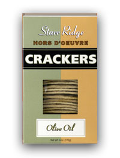
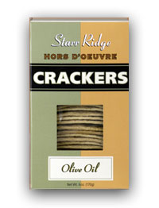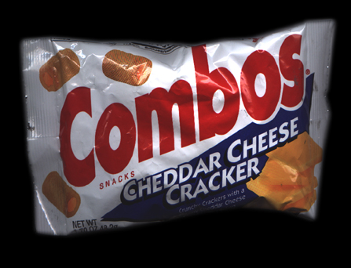 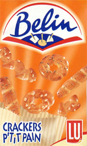
Loin de moi l'idée d'être vulgaire, mais après cette rime en "erie", je n'ai pas trouvé mieux pour illustrer le titre de cette chronikerie! :o)
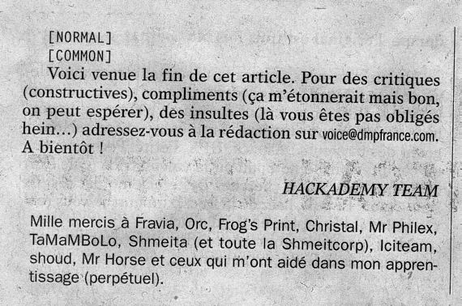
Un article écrit en style perso et signé du nom du journal ??!? Non seulement ça à l'air louche, mais en plus s'ils écorchent le nom de Smeita (et pas Shmeita) dans les greetz, je vous le demande: où shmallons nous??
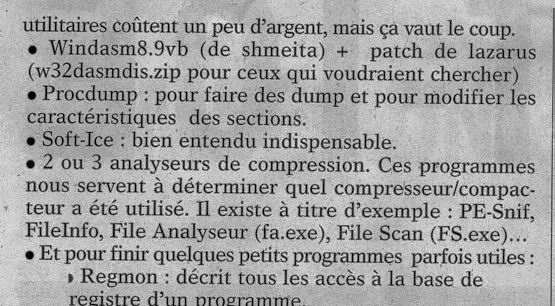
Encore et toujours la même photte dor'tograf (mais en est-ce bien une!?), mais là s'allie aussi l'ignorance : Smeita n'a jamais codé une seule version de WDasm (et personne à la Shmeitcorp n'a écrit ou prétendu le contraire...). Cet honneur revient à la boîte URSoftware (il suffit d'au moins utiliser le soft UNE fois et de regarder le About - faut pas être un crackeur pour ça... :o/) et notamment à XXX (ça, ça n'y est pas dans le About par contre :o) ). De plus, contrairement à ce que dit la première phrase, WDasm est FREEWARE, de même que ProcDump, Regmon et la plupart des PE-sniffers...
Par contre, Static_REvenge a traduit les strings de WDasm en français. Ca oui, c'est de la Shmeitcorp !
Celle-là, ça fait un moment que je l'ai vue et je n'ai pas résisté à l'envie de la prendre en photo :p A quand les boissons hexworkshop, la ligne de vêtements WDasm32 (remarque avec un nom pareil, ça aurait certainement de la gueule :o) ) ou encore les restos Procdump ???
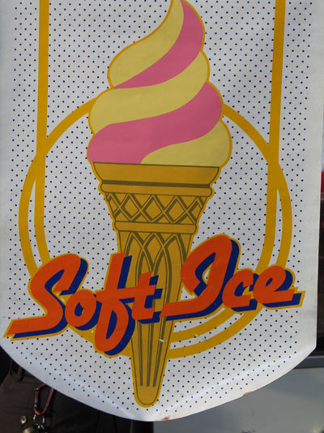
Je vois bien la scène au resto Procdump :
- "alors mademoiselle je voudrais un carré d'agneau et un pinot gris svp!"
- "bien monsieur, et en dessert qu'est ce que ce sera? "
- "une glace softice bien sûr!!!"
Et bien sûr, Ô bien évidemment, quand la serveuse vous amène les boissons au début du repas, elle ne vient pas sans apéritifs dont voici une sélection :)
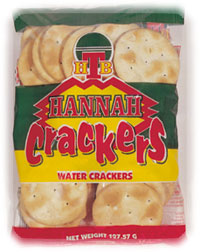 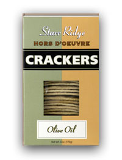
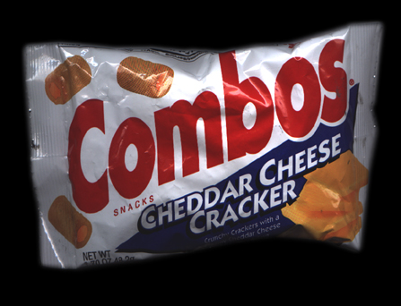 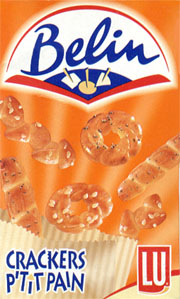
Toujours dans le même registre, voici une célèbre marque de mouchoirs. Perso, je n'achète que celle-là. Comment??! Pas vous! Ah, elle n'y est pas dans votre supermarché? Moi je serais vous, j'irai gueuler auprès de la direction et faire un scandale !
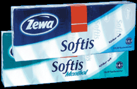
Et si vous vous demandez comment on fait pour tenir la forme comme ça à la Shmeitcorp, je peux bien vous dévoiler notre petit truc: on a tous des friandises très très spéciales ;o)
 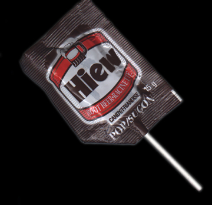
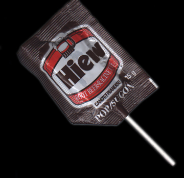 


Pour continuer, je voudrais présenter et commenter ce texte ci-dessous trouvé au hasard de mes errances sur le net (mes commentaires sont en bleu) :
CrackersLes crackers sont de petits biscuits apéritifs. Généralement de forme rectangulaire et finement salés, ils accompagnent à merveille les quelques minutes de mise en bouche qui précèdent un repas entre amis. Parfois, au coeur de la nuit, les crackers prennent vie et se révèlent alors être de redoutables informaticiens (Ca c'est nous ça!). Ils en ont marre d'être croqués entre l'olive verte et les chips (Parfaitement, il-y-en-a-mar-re!!! C'est un scandale!). Armés de leurs petits doigts gras, ils démarrent les ordinateurs de leurs propriétaires et vont, en ligne, perpétrer les pires crimes (Oui, bon là il veut dire hackers et pas crackers...). Heureusement, au petit matins, ils se font manger et tout finit bien (Arghhh, et en quoi elle finit bien l'histoire?? Ah, il parle des biscuits! Ok.). [...] Crackers ou Hackers ?Les hackers sont les pirates informatiques du réseau (Ouiiiii, ce sont eux les méchants!!!!) mais les crackers sont les biscuits apéritifs qui désassemblent des programmes afin d'obtenir le code source assembleur (Et nous on est les gentils biscuiiiiits :p). Ce code leur permet de modifier les instructions d'un programme, par ex. un shareware pour obtenir une version enregistrée. Attention donc à ne pas confondre les biscuits quand vous allez au supermarché. En effet un cracker n'atteint pas votre vie privée si ce n'est qu'il porte atteinte aux Droits d'Auteurs donc au programmeur du logiciel ou à une société (Mon Dieu, quel lavage de cerveau stérile!! Là, il confond le "pirate" qui distribue les logiciels/cracks et celui qui apprend la science du Cracking tranquillement chez soi... Ce n'est pas parce que j'ai appris à reverser un saut conditionnel dans un soft que les cours en bourses de la société XYZ vont s'effondrer demain! Et apparemment pour la distribution de logiciels/cracks non plus si on regarde (par exemple) une boite comme Adobe). De plus je suis pratiquement sur que vous posséder quelques crackers chez vous (entendez les biscuits, bien sûr). Il y a donc une énorme différence entre un biscuit crackers ou hackers de chez Belin ! (Ah ben comme ça je ne me tromperai plus la prochaine fois que je vais au supermarché :D) Un cracker s'occupe de rendre des logiciels libre (Dans tout discours absurde, il y a toujours une vérité. Nous rendons les logiciels L-I-B-R-E-S, c'est-il pas beau ça? Ca, c'est de la démocratie! :D) alors qu'un hacker s'occupera de *détruire* quelques applications webs... (Ouiiiii, ce sont eux les méchants!!!!) bien que souvent un cracker est hacker et un hacker cracker... (Euh, bon là il reconfond tout, histoire de mieux noyer le poisson dans l'eau) Note: Dans certains journaux informatiques (Il doit très certainement parler du journal que j'ai mentionné tout au début de cette Chronik ;p) le terme CraCkers regroupe l'ensemble des acteurs de la scène Underground (pirates informatique). Aujourd'hui son évolution (de par la diversité des systèmes informatique existant) amène à différencier ces groupes suivant leur domaine de prédilection. Il faut aussi préciser:
"Sous le terme Hacker, se cache aussi les développeurs de l'Open
Source, la communauté qui a GNUalement construit l'univers Linuxien..."
Sbeuz© / Cocos |

Etonnant non? Comme l'a dit si justement ce "Sbeuz", la philosophie des crackers est le logiciel libre ! On appelle ça la "Free Shareware Foundation". Voilà un truc qui va plaire à notre ami Oracle !!! :D


Au passage de ce clin d'oeil aux acteurs du monde du libre, je les salue et leur envoie tout notre soutient pour le combat contre la brevetabilité des logiciels. Au rythme où ça va, vous allez voir que bientôt, on va se faire breveter nos émotions et qu'on devra aller payer 10 francs quand on pensera "Tiens, j'ai faim! Faut que j'aille manger..."
Pour finir ce point, notre ami Bungler disait juste à propos sur irc que :
<Bungler> oui , pas cette forme de libre bien que je le soutiens mais la def du crackeur c'est plutôt de permettre l'informatique a TOUS , a ceux qui ne peuvent lâcher 1000 euros pour flash 6.
Sans compter que Macromedia est très certainement heureuse de savoir que les nouveaux embauchés dans les boites utilisant la communication informatique/multimédia seront déjà formés au produit et le réclameront dans leur boite pour travailler avec. Le meilleur exemple est "3DSMax Pro", le soft coûte dans les 50.000 Frs si je me rappelle bien, donc au-cun particulier n'aura les moyens de se le payer, et pourtant c'est le premier soft 3D utilisé dans les boites et celles-ci sont certainement contentes de pouvoir embaucher des nouveaux gars qui sont jeunes et savent s'en servir! Or quand on regarde l'économie de ces sociétés de softwares en général, tout le monde sait très bien que ce n'est pas le produit qui rapporte le plus, mais les services qui sont vendus avec! Quant aux particuliers qui font des sharewares, n'en parlons pas! Ils sont en pleine concurrence avec la première grosse boite venue qui les écrase ou les rachète... C'est le serpent qui se mange la queue. Voilà pourquoi le débat du cracking est stérile et hypocrite, car malgré les nombreuses versions de Photoshop et autres Acrobat de Adobe (toujours pour ne citer qu'un exemple) qui sont sur le net depuis des lustres, cette société fait toujours des profits et sort constamment des nouvelles versions ET c'est LE standard dans la retouche d'image. Si maintenant il n'y avait pas de cracks et de versions dispos sur le net, s'il fallait une campagne de pub pour atteindre le même niveau, ça chiffrerait combien messieurs les experts du BSA? Sortez vos calculettes...
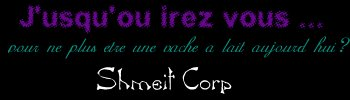
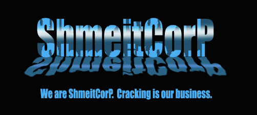
.Rien n'a le droit de mettre un frein à la Connaissance.
Et enfin pour terminer, voici un délire spontané d'un de nos visiteurs et d'Oracle sur le chan (il y a très longtemps...) qui ont improvisé l'hymne des crackers sur la mélodie de la Marseillaise (très joli!) :
<Djp> crakons enfant de la partriie le jour de gloire est arrivé... <Thor> l'internet sanglant est levé ! <Djp> contre nous de ces softwares <Thor> l'internet sanglant est levé ! <Djp> l'internet sanglan est levé <Djp> entendez vous ds les processeurs <Djp> mujir ces féroces softwares <Thor> ils viennent jusque dans nos systemes <Djp> égorger not pov'Hdd <Thor> formez vos crew <Djp> Crackons .... Crackons..... <Thor> Crackons ensemble! <Djp> un soft impur <Djp> tourne sur not bécane... <Djp> Et voila La Marseillaise revue et corrigée... <Thor> par nos soins <Djp> après chanté on boit un coup.... <Djp> tien Thor * Djp file a Thor un verre de malibu... *** Thor is now known as Oracle